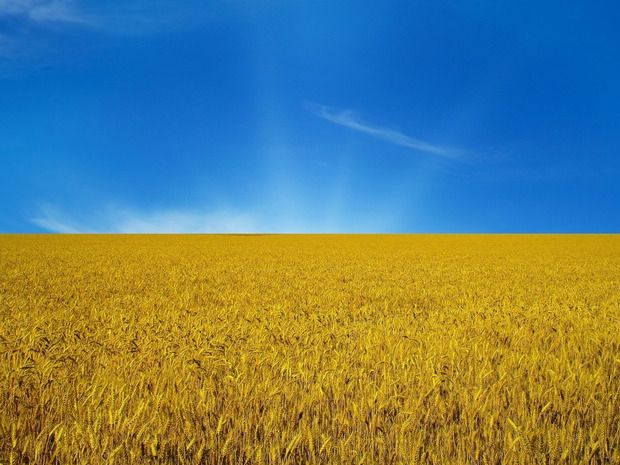
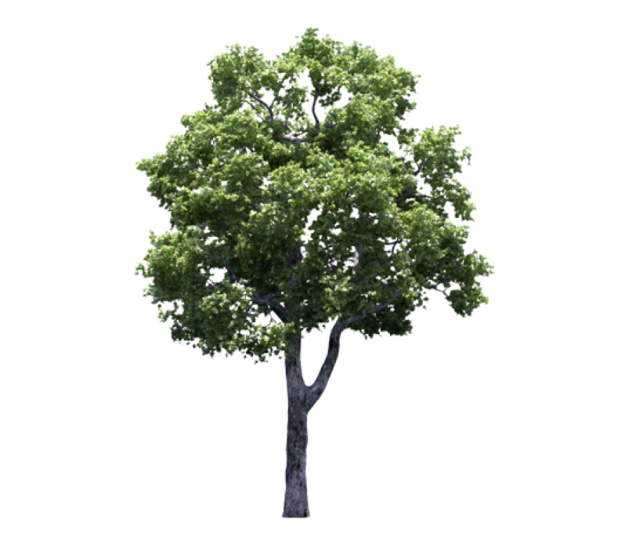
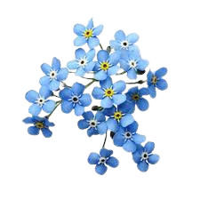
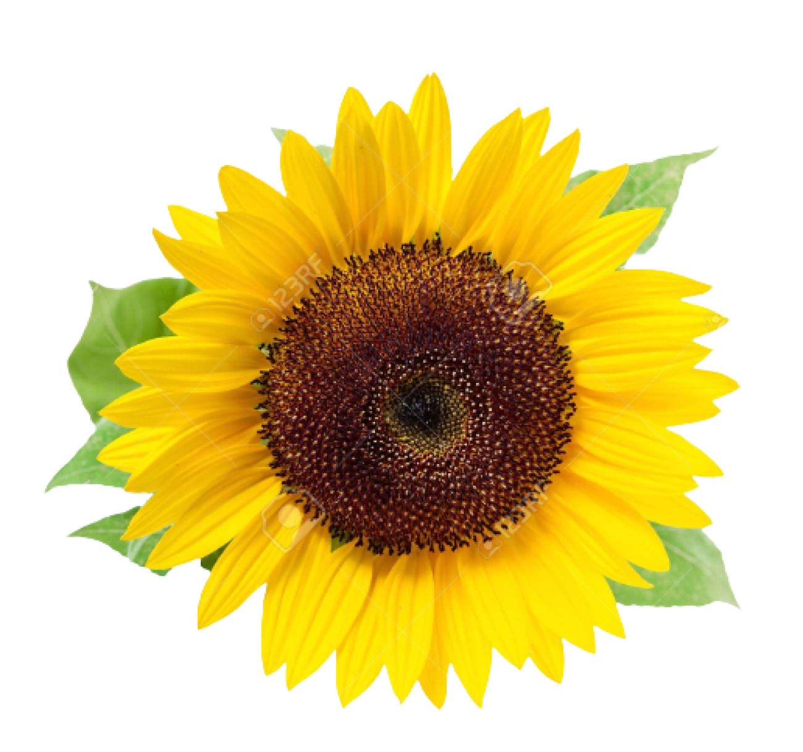
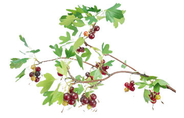
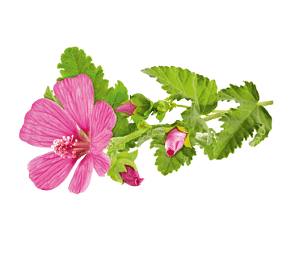
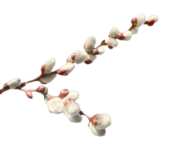
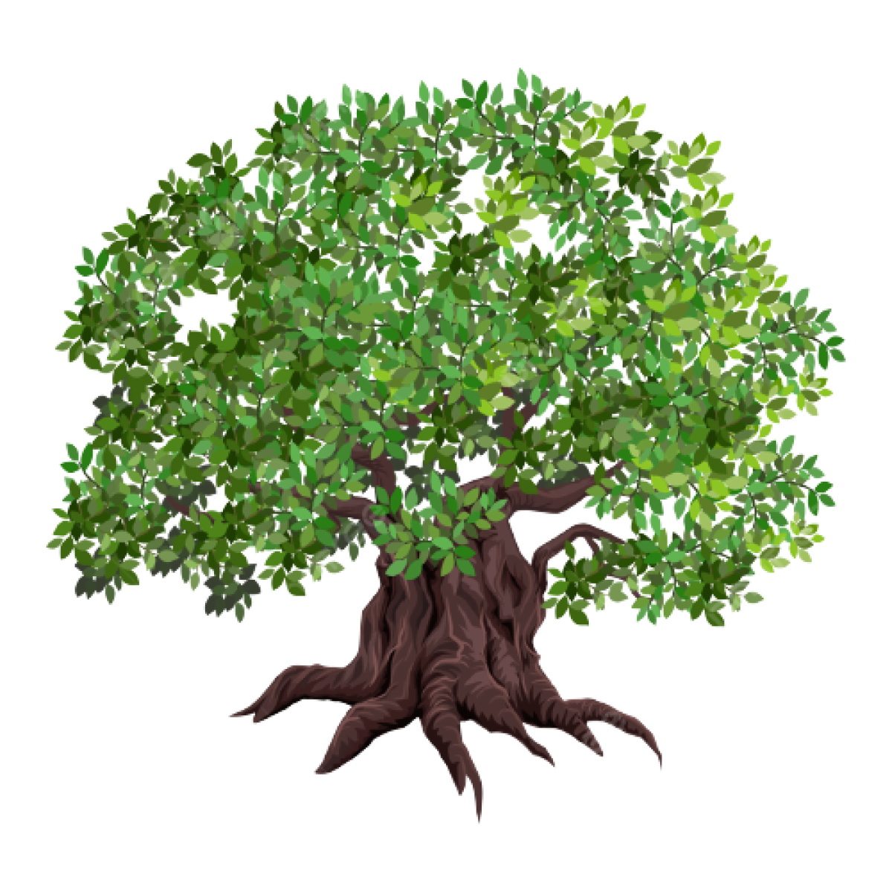
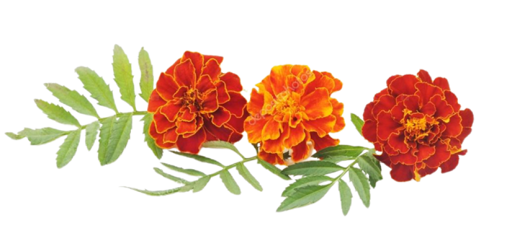

РОСЛИНИ, ЯКІ ВВАЖАЮТЬСЯ СИМВОЛАМИ УКРАЇНИ.

Певні рослини ще з давніх часів уособлюють красу України, духовну силу
її народу і є доказами любові до рідної землі. Про народні символи складено
безліч легенд! Їх оспівують в піснях,використовують в обрядах , вишивають
на сорочках та на рушниках, ними прикрашають оселі на свята. Звичайно, вони
також стали одним з улюблених жанрів у сучасній флористиці. Флористи часто
використовують квіткові символи України для створення унікальних
композицій, багато з яких можна знайти на нашому сайті, а також замовити
доставку квітів в Одесі та інших містах країни онлайн.
ТОПОЛЯ.

Тополя з давніх-давен є українським народним символом. З цим струнким
деревом ототожнювали гнучкий дівочий стан та гірку дівочу долю. Про тополю
можна почути безліч пісень та послухати численні легенди. Одна з них
оповідає про наступне. В далекому селі жила закохана пара - гарна молода
дівчина Поля і юнак на
ім'я Стріба. Одного дня Стрібу відправили в сусіднє село розвідати обстановку. Відправившись на завдання,
Стріба ще здалеку побачив багато ворогів. Він стрімголов прибіг додому та розповів усім невтішні новини.
Тоді люди вирішили заховати домашню худобу,
майно і перечекати в горах те лихо. Бог блискавки і грому
Перун побачив таку підозрілу поведінку і захотів розібратися, що ж трапилося. Та щойно він зійшов на
землю, то побачив Полю. Молода дівчина припала йому до душі і він вирішив взяти її за дружину. Селяни
зраділи, бо мати такого покровителя - це велика честь. А Стріба просто знепритомнів. Побачивши це, Перун
сказав, що на чужому горі свого щастя не зробиш та вирішив, що дівчина буде нічия. Бог стукнув палицею об
землю і там, де вона стояла, з'явилося
струнке зелене дерево. Люди, які були ближче, бачили, що сталося, а ті, що
стояли поодаль, запитували: "Де Поля?" І чули вони у відповідь: "То Поля".
А хлопця Перун забрав з собою на небо і зробив Богом земних вітрів.
Серед вчених немає єдиної думки про кількість видів, що
входять до даного роду дерев: за різними даними, всього налічується десь
100 видів, більшість з яких представляють собою дерева першої і другої
величини, рідше - третьої величини.
Висота їх досягає 30-40 м, а діаметр
стволів - до 150 см. порода. Вона потребує родючого і вологого
грунту. Всі види тополь погано переносять застійне зволоження. Тополі дуже
полюбляють світло, що проявляється вже на ранніх стадіях їх росту і
розвитку (при нестачі сонячних променів вони різко знижують швидкість
росту). Дерева зустрічаються по всій території України.
БАРВІНОК.

Барвінок є символом кохання. Ця рослина отримала свою назву на честь
пристрасних почуттів молодого хлопця Бара і дівчини Вінки. Барвінком
традиційно прикрашають коровай на весіллях, вплітають у віночок. Кущі даної
рослини можна зустріти майже у кожній садибі. Він зеленіє навіть під
снігом.
Раніше барвінок виконував роль надійного оберега від нечистої сили.
Напевно, саме тому з цією квіткою
пов'язано стільки легенд та традицій. В наші часи квітку шанують за її привабливий зовнішній вигляд, а також
досить широко використовують у народній медицині. Ці кімнатні рослини здатні зняти головний біль та знизити
підвищений кров'яний
тиск. Але це лише за умови зовнішнього застосування: сік барвінка токсичний
та може спровокувати отруєння.
СОНЯШНИК.

Соняшник - це справжній символ України, родючості і процвітання,
веселощів і благополуччя, рослина також носить назву "квітка сонця".
Батьківщиною соняшнику вважається Північна Америка. Перші згадки про
рослину датуються XVI століттям. Спочатку соняшник був декоративною
рослиною і тільки через 100 років була відкрита його цінність як
сільськогосподарської культури.КУПИТИ СОНЯШНИК МОЖНА КУПИТИ
ПО-ТЕЛЕФОНУ,НАТИСНУВШИ СЮДИ!!!
В Україні квітка з далекого континенту прижилася дуже швидко. Родючі
степові грунти, достатньо сонця - саме такі умови полюбляє рослина.
До речі, сьогодні Україна посідає друге місце в світі по темпам
вирощування насіння соняшнику.
На сьогоднішній день соняшник є невід'ємною составною літніх композицій.
Навряд чи серед декоративних рослин знайдеться більш життєрадісна квітка.
Адже соняшник завжди дивиться у сторону світлого, безхмарного майбутнього.
Соняшник добре зберігається у воді, а при регулярній зміні води на чисту
буде радувати своєю свіжістю ще довше. Краще ставити квіти з підрізаними
стеблами саме в теплу воду. Холодна вода неприпустима через вміст в стеблах
рослинного масла. Ці квіти прекрасно підходять для першого побачення.
Жовтий колір рослини символізує повагу та єдність. Замовляйте чарівний
букет соняшників цілодобово в інтернет-магазині. Доставка квітів в Одесі та
інших крупних містах працює без вихідних. Якщо ви хочете дізнатися більш
детальну інформацію про ту чи іншу позицію, звертайтеся за консультаціями
до менеджерів цілодобово.
КАЛИНА.

Завжди любили та шанували в Україні й струнку калину, яка згодом стала
сприйматися як національне надбання. Калина здавна є уособленням добра,
миру, благодаті та кохання.
Калина приваблює своєю красою і влітку, коли вона квітне, і восени, коли
її листя набуває багряного кольору, і взимку, коли на фоні білого снігу
яскраво червоніють її ягоди. Калина була невід'ємним елементом у
вишиванках. Також нерідко можна було побачити вінки з калиною. З гілок
калини чоловіки робили сопілки та колиски для немовлят. Традиційно калиною
прикрашали коровай для молодих, а на весільному рушнику вишиті калина з
дубом були символами дівочої тендітності та чоловічої мужності. На
святковому столі перед одруженими також красувався букет із гілочок дуба та
калини.
Стародавні
слов'яни вважали калину символом переродження та нескінченності життя. Сама назва "калина" пов'язана
з назвою сонця - Коло. Ягоди і кісточки рослини такі ж круглі, як небесне
світило.
Всім нам знайомі пісні про калину. Існує й чимало легенд. В одній з них
розповідається історія молодої дівчини Калини, яка на свій ризик завела
ворогів-бусурманів до болота та, на жаль, загинула разом із ними. На полі
її загибелі згодом виріс кущ, який на честь дівчини і назвали калиною. З
тих пір кущ калини було прийнято садити на могилах козаків та чумаків, які
загинули у бою.
Потрібно відмітити, що у ягодах калини міститься цілий ряд найважливіших
вітамінів, таких як А, С, Е, Р, К. Також в них є високий вміст незамінних
мінералів, а саме калію, магнію, цинку та заліза. Немало й ефірних масел.
Таким чином, плоди рослини є справжнім джерелом вітамінів і антиоксидантів.
При цьому калорійність калини становить всього 28 ккал на 100 грам.
МАЛЬВА.

Квіти мальви знайомі всім нам ще змалечку. Рожева мальва традиційно
вважається сильним оберегом. Квітами цієї рослини прикрашали оселі,
висаджували їх на своїх ділянках, щоб відвести від родини горе та біду.
Згідно з народними повір'ями, добрі духи померлих родичів завжди
знаходяться десь поблизу кущів мальви та є своєрідними охоронцями усіх, хто
живе в хаті.
До того ж, квітки мальви дуже привабливі. Вони є справжньою прикрасою
садів та узбічь. Висота пагонів рослини може варіюватися від 30 до 120
сантиметрів. Пагони можуть бути приземними, прямими, а також висхідними.
Поверхня молоденьких стебел покрита волосками, які з часом зникають, і
пагони стають голими.ЗАМОВИТИ КВІТИ ПО ЕЛЕКТРОННІІ ПОШТІ,
МОЖНА НАТИСНУВШИ СЮДИ !!! Мальви в Україні ростуть повсюди. Інколи квіти
виконують роль кормових рослин та входять до складу фарб. За допомогою
відвару мальв можна ефективно лікувати захворювання дихальних шляхів.
ВЕРБА.

Та найбільш шанованим деревом в Україні є верба. Напевно, всі чули
приказку: "Без верби і калини - нема України". На території України росте
понад 30 видів цього дерева. Часто говорять: "Де вода, там і верба". Міцне
коріння верби здатне зміцнювати берега та очищати воду.
Коли наші прадіди копали криницю, то кидали декілька гілок верби для
того, щоб питна вода стала чистою. Також було прийнято класти вербову
дощечку у відро з водою в хаті. Лише таку воду дозволялося вживати.
Пов'язані з вербою і романтичні історії. Так, під пишним гіллям верб
закохані люди призначали побачення та робили освідчення.
ДУБ.

Дуб є символом мужності та сили. Ще здавна було прийнято вишивати юнакам
на сорочках дуби, щоб молодик виріс здоровим та впевненим у собі. Також
високо цінувались дубові меблі. Вважалось, що міцний сон на дубовому ліжку
неодмінно зробить тебе непереможним.
Цікаво знати, що висота середньостатистичного дуба може складати 50
метрів. Але дуби ростуть досить повільно, прибавляючи з кожним роком лише
по декілька сантиметрів у висоту.
Дуби - це дерева-довгожителі. Саме тому вони так часто асоціюються з
мудрістю та довголіттям. Так, тривалість життя дуба може складати й 500
років, хоча в історії зустрічалися екземпляри, які прожили навіть більше
тисячоріччя. Наприклад, у місті Юзефін, що на Рівненщині, росте 1300 річний
дуб.
ЧОРНОБРИВЦІ.

Саме чорнобривці є традиційними елементами українського віночку. Ці квіти
є символом вірності та відданості. Прийнято вважати, що чорнобривці
запалюють кохання у серці. Так, дівчина носила на голові вінок з цими
квітами, щоб молодик не не забув дороги до милої та ніколи не зраджував її.
Яскраві бутони чорнобривців уособлюють образ бравого парубка -
чорнобривого, сильного та чарівного
А ще існувала думка, що чорнобривці здатні оберігати хату від злих духів
та недоброго ока.
Саме тому у садочку біля кожної хати обов'язково росли чернобривцi.Квіти були настільки
поширеними, що згодом вони стали
справжнім символом рідного дому та нашої Вітчизни - неньки України.
У ранньому християнстві була традиція оточувати зображення Діви Марії
квітами чорнобривців, немов золотими монетами. За легендою під час втечі
Йосипа і Марії в Єгипет, їх почала переслідувати зграя злодіїв. Коли ці
злодії наздогнали втікачів та відібрали у них гаманець, то звідти замість
грошей посипалися бутони чорнобривців.
Чорнобривці - це рослини, що були завезені до Старого світу з далекої
Америки. Але ці квіти настільки припали до душі нашому народу завдяки своїй
невибагливості до умов вирощування, а також довгому періоду цвітіння аж до
заморозків, що в нашій свідомості вони сприймалися як споконвічно
“тутешні”. Годі й казати, що чорнобривці й досі є одними з найулюбленіших
квітів.